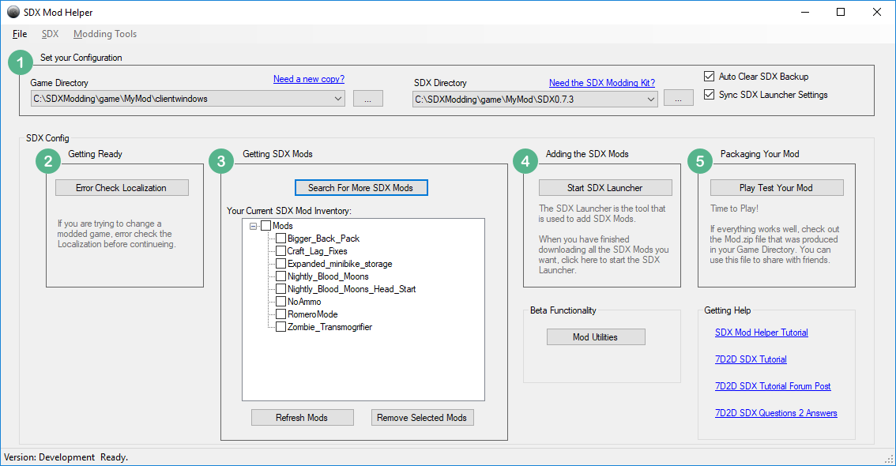
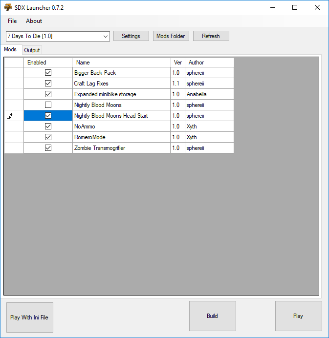
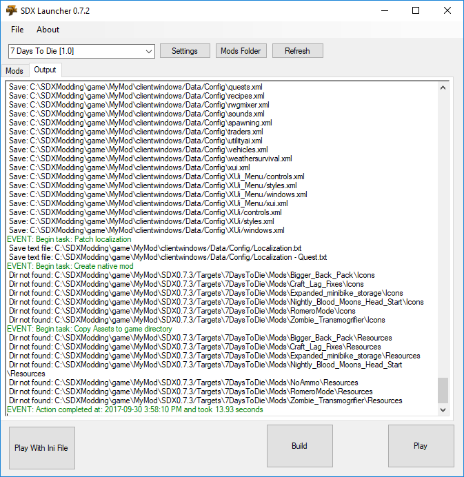

With the game environments setup, and the SDX mods downloaded, it's time to build the mods into your game.

Click on the Start SDX Launcher button.

Click on the Enabled button on all the mods you want to enable. Then click the Build button.

Scroll up, reviewing the logs for any Red errors that may have stopped it from working.
Once you are satisfied that it completed successfully, close the SDX Launcher and return to the SDX Mod Helper.
Note: You may run the game from the Play button in the SDX Launcher. However, the 7D2D SDX Mod Helper does a few extra steps to remove potential warnings from your build log, including removing duplicate icons that are found.
Created with the Personal Edition of HelpNDoc: Produce electronic books easily